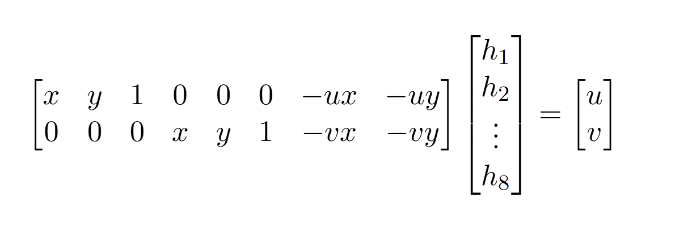
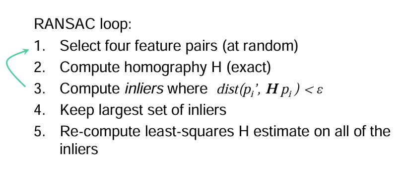

Project 3: (Auto)stitching and Photo Mosaics
Part A: Image Warping and Mosaicing
A.1: Shoot the Pictures
Before I could begin creating mosaics by registering, projective warping, resampling, and compositing image data, I needed to capture photos that were well suited for this project. Inspired by Cal's detailed architecture and lush nature, I took pictures of some of my favorite places on campus, making sure to keep the center of projection fixed while I rotated my camera.


A.2: Recover Homographies
To generate all relevant images for this section, run the following command: python main.py a_2
In order to warp my images into alignment, I first needed to solve for the transformation matrix that allows us to map one perspective projection to another. This 3x3 matrix is called the homography. To solve for this matrix, you can set up a system of equations to map points from one image to another, using least squares estimation to derive the homography:
- Identify points
(x, y)in the first image that correspond with points(u, v)in the second image. In the second part of the project, this part will be done automatically. For now, I used this tool to identify correspondences. - For each pair of points
(xi, yi)and(ui, vi), we have this relation where h1, ..., h8 are entries in the homography matrix. - From here, we can use algebra to arrive at the equations h1x+h2y+h3−uh7x−uh8y=u and h4x+h5y+h6−vh7x−vh8y=v. In matrix form, this looks like 
- For each additional correspondence, you can extend the matrices like this.

Since the homography matrix has 8 unknowns (the 9th value is always 1), we need at least 8 equations to reach a unique solution. This means that we need at least 4 correspondences to map one image onto another. In practice, using just 4 points can be very unstable, as being off by a few pixels can lead to large errors. For the images below (and the rest of the mosaic images), I used about 20 correspondences.


A.3: Warp the Images
To generate all relevant images for this section, run the following command: python main.py a_3
Now that we have the ability to recover homographies we can begin warping images onto one another. One common use case for homographies is image rectification, often used when taking pictures of important documents. I decided to demonstrate my ability to rectify images using a couple poster that I have hanging in my apartment. Using the pixel correspondence tool I mentioned earlier, I mapped the corners of each poster to the corners of the image so that the homography would result in a totally flat picture of the poster. Having a correct homography is only one part of the process, though. Since pixels in the input image are unlikely to align perfectly with pixels in the output image, we need some kind of interpolation technique to ensure the result doesn't have holes. I implemented two types of interpolation, nearest neighbor and bilinear. Given a pixel location in the output image, nearest neighbor assigns its value to the closest corresponding pixel from the input image while bilinear interpolation involves finding a weighted average of the four closest pixels in the input. Despite its relative slowness, I preferred using bilinear interpolation when producing images for this assignment.


Rectification works! We can also see the difference between using nearest neighbor and bilinear interpolation on an image. Up close, images that used nearest neighbor definetly look more pixelated than those with bilinear interpolation. The averaging of values in bilinear interpolation allows for a much smoother output, but this comes at the cost of time. Bilinear interpolation involves many more mathethatical operations compared to the nearest neighbor approach, which simply rounds values to the nearest integer.
A.4: Blend the Images into a Mosaic
To generate all relevant images for this section, run the following command: python main.py a_4
Finally, we can begin producing image mosaics! My process for creating image mosaics works as follows:
- Using manually selcted correspondences, compute the homography between the left image and the center image as well as the homography between the right image and the center image.
- Warp both the left image and the right image onto the center image.
- Pipe the four corners of the left image and the right image through their respective H transforms to determine the dimensions of the final mosaic.
- Place the center image and each warped image on their own canvas with the dimensions determined in step 3 where the top left corner of the bounding box maps to (0,0). Additionally, add an alpha channel to each image
- Feather the center image, decreasing its alpha values in relation to the pixel's distance from the center point of the image on the canvas (not necessarily the center of the canvas, as the image may not find itself in the exact middle of the canvas after step 3)
- Create two mosaics, one with the warped left image and the feathered center image (Mosaic 1), and the other with the right image and the feathered center image (Mosaic 2).
- To create the final mosaic. Combine the left half of Mosaic 1 with the right half of Mosaic 2.


As you can see, things worked out pretty well. The results are not perfect, however. There is a fair amount of ghosting/blurriness in some of the high frequency areas of the image. This is especially visible in the leaves of the Eucalyptus trees in the second mosaic. I believe the main cause of this issue is my choice of correspondence points. When choosing correspondence points, the high amount of detail in some parts of the images made it really hard to find a pixel-perfect correspondence for a given point. I ended up focusing most of the points around prominent elements with clear edges/corners. As a result, the homography is only able to warp those parts of the image super accurately. As we move to auto-stitching later on, this will hopefully not be an issue.
B.1: Harris Corner Detection
To generate all relevant images for this section, run the following command: python main.py b_1
The first step of stitching images automatically involves detecting prominent features or "corners" that we can use to find correspondences between images later on. I found these corners using a Harris detector, which essentially locates all points in an image where there is significant change in the x and y direction. Luckily, we were provided some sample code for single-scale harris detection, which I used to generate the image below:
As you can see, using Harris detection results in very large number of corners (1186 in this case). For the purposes of alignment, having this many corners/interest points is not necessary and will affect runtime significantly. One easy way to restrict the number of points I'm considering is to filter for the N strongest points in the image, where strength refers to the value of the corner response function R (calculated during the Harris detection process) at a particular point.
Unfortunately, filtering for the N strongest corners leaves us with a very uneven spatial distribution of interest points. If we continued from here without making the distribution more even, the least squares estimation used to calculate the homography would not include many points from sparsely populated areas like the stairs in the images above. The homography would not perform well when it comes to warping that part of the image, leading to significant ghosting/blurring. To avoid that, I implemented Adaptive Non-Maximal Suppression (ANMS) to find corners that are strong and distributed evenly throughout the image. My implementation works as follows:
- For each Harris corner
c_i:- Find all other Harris corners
c_jin the image such thatstrength(c_i) < 0.9 * strength(c_j) - Calculate the distance from
cto all other strong Harris corners and find the minimum - If there are no corners such that
strength(c_i) < 0.9 * strength(c_j), setc_i's minimum distance to infinity
- Find all other Harris corners
- Sort the Harris corners by their minimum distance to another strong corner in descending order
Now, if we take the top 250 or top 500 Harris corners sorted by their minimum distance to another strong corner, we get evenly distributed interest points!

B.2: Feature Descriptor Extraction
To generate all relevant images for this section, run the following command: python main.py b_2
Now that we can find prominent, evenly distributed points in an image, we need to find a way to match those points to locations in another image. There's no way to guarantee that the Harris corners in one image match the Harris corners in another image, so we need to get creative. In order to match Harris corners across images, we need to create feature descriptors. A feature descriptor is an bias/gain normalized 8X8 pixel patch centered around an interest point that samples surrounding pixels at a low frequency. Normalizing helps us combat changes in light intensity bewteen images, while sampling at a lower frequency makes the descriptors a bit less sensitive to their exact location (which makes matching easier later on). My implementation of feature descriptors works as follows:
- Read in the image as black and white and apply a Gaussian blur (I used a kernel size of 13 and σ = 2).
- Find a set of evenly distributed Harris corners using ANMS.
- For each corner
c- Set
xandyequal to the rounded x and y coordinates ofc. - Find the 40x40 pixel window in the blurred balck and white image centered at
(x, y). - Sample the 40x40 window with a spacing of 5 pixels between each sample (resulting in a size of 8x8) and set that equal to
patch. - Normalize
patchby subtracting the mean and dividing by the standard deviation. - Flatten
patchinto a 1D vector and store for later use.
- Set
Using the image of Haviland Hall from part B.1, I applied these steps to create feature descriptors for the top 500 ANMS corners. Pictured below are a few examples of what the feature descriptors look like.

B.3: Feature Matching
To generate all relevant images for this section, run the following command: python main.py b_3
From here, we can begin finding matching feature descriptors bewteen images and identifying correspondences! The naive approach to finding matches between two images works like this. For every feature descriptor in image 1, loop through every feature descriptor in image 2. Calculate their L2 distance and match the feature descriptor from image 1 with the feature descriptor from image 2 that minimizes L2 distance. While you may end up finding some good matches, you'll also end up matching a lot of outliers with feature descriptors that don't really match but just happen to minimize L2 distance. A clever way to get around this is to use Lowe's trick. When finding the smallest L2 distance between two descriptors, you can also find the second-smallest L2 distance. Then, the ratio of the smallest L2 distance to the second smallest L2 distance will tell you how good the match is. When the ratio is small, that means you've found a good match since the pairing with the smallest distance is much better than the pairing with the second smallest distance. By only keeping the matches whose ratio is below a certain threshold t, you can eliminate almost all outliers! In my experience, I found t=0.7 returned lots of good matches while getting rid of most of the outliers. Below, I've visualized the matched features for images of Haviland Hall and plotted the correspondences. You'll notice there are still a few mismatched features present, but those will not have an effect on the final image alignment thanks to the RANSAC algorithm implemented in B.4
B.4: RANSAC for Robust Homography
To generate all relevant images for this section, run the following command: python main.py b_4
Now that we have our correspondences, all that's left is to solve for a homography that can map these matched features onto each other. As I mentioned at the end of the last section, however, we still have some outliers/mismatches to deal with. In order to whittle down my list of correspondences to a list of "good" correspondences, I implemented the RANSAC algorithm introduced in lecture.
For my autostitched images, I chose to use a ε value of 5.0 to provide a little room for error without giving mismatched points a chance to make it into the set of inliers. After running RANSAC for 1000 iterations, I had my final homography matrix H. From there, I could reuse all of my photo warping/stitching code from before to stitch images together. With everything now implemented, let's revisit the mosaics from part A, but this time using autostitching! Looking at the results below, my autostitched photos do not look radically different than the manually stiched ones, but there are definetly improvements when it comes to blurriness/ghosting. The mosaics of the Eucalyptus Grove are an especially good example of this, as the autostitched mosaic doesn't contain any of the alignment issues present in the manually stitched one (Look at the area around the Sun in both images to see the difference). Overall, I'm incredibly impressed by the power of RANSAC!